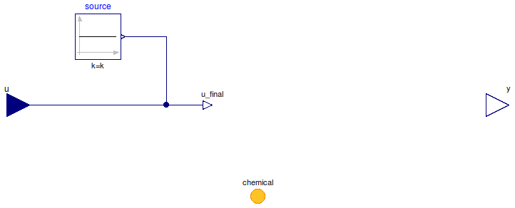

Table of Contents
- User's Guide
- Blocks
- Conditions
- Assemblies
- Regions
- Subregions
- Connectors
- Characteristics
- Units
- Quantities
- BaseClasses
Download
- Latest: FCSys-2.0.zip (**Please check back soon or contact kdavies4 at gmail.com.)

| Name | Description |
|---|---|
| Specify specific entropy-temperature product (measure heat flow rate) | |
| Specify heat flow rate (measure specific entropy-temperature product) | |
| Custom | |
| Base classes (generally not for direct use) |
 FCSys.Conditions.ByConnector.ChemicalReaction.ThermalAdvection.SpecificEntropyTemperature
FCSys.Conditions.ByConnector.ChemicalReaction.ThermalAdvection.SpecificEntropyTemperature
| Type | Name | Default | Description |
|---|---|---|---|
| ConditionType | conditionType | BaseClasses.ConditionType.Sp… | Type of condition |
| Specification | |||
| Boolean | internal | true | Use internal specification |
| RealExpression | source | redeclare Modelica.Blocks.So… | Source of internal specification |
| Type | Name | Description |
|---|---|---|
| ChemicalReaction | chemical | Connector for a chemical reaction |
model SpecificEntropyTemperature "Specify specific entropy-temperature product (measure heat flow rate)" extends BaseClasses.PartialCondition( final conditionType=BaseClasses.ConditionType.SpecificEntropyTemperature, u(final unit="l2.m/(N.T2)"), final y(final unit="l2.m/T3") = chemical.Qdot_A); equation chemical.sT = u_final; end SpecificEntropyTemperature;
FCSys.Conditions.ByConnector.ChemicalReaction.ThermalAdvection.HeatRate
| Type | Name | Default | Description |
|---|---|---|---|
| ConditionType | conditionType | BaseClasses.ConditionType.He… | Type of condition |
| Specification | |||
| Boolean | internal | true | Use internal specification |
| RealExpression | source | redeclare Modelica.Blocks.So… | Source of internal specification |
| Type | Name | Description |
|---|---|---|
| ChemicalReaction | chemical | Connector for a chemical reaction |
model HeatRate "Specify heat flow rate (measure specific entropy-temperature product)" extends BaseClasses.PartialCondition( final conditionType=BaseClasses.ConditionType.HeatRate, u(final unit="l2.m/T3"), final y(final unit="l2.m/(N.T2)") = chemical.sT); equation chemical.Qdot_A = u_final; end HeatRate;
FCSys.Conditions.ByConnector.ChemicalReaction.ThermalAdvection.Custom
The expression to which the condition is applied (x)
must involve chemical.sT and/or chemical.Qdot_A.
Extends from BaseClasses.PartialCondition (Partial model for a fluid condition).
| Type | Name | Default | Description |
|---|---|---|---|
| ConditionType | conditionType | BaseClasses.ConditionType.Cu… | Type of condition |
| Specification | |||
| Boolean | internal | true | Use internal specification |
| RealExpression | source | redeclare Modelica.Blocks.So… | Source of internal specification |
| Real | x | chemical.sT | Expression to which the condition is applied |
| Measurement | |||
| RealOutput | y | chemical.Qdot_A | Measurement expression |
| Type | Name | Description |
|---|---|---|
| input RealInput | u | Value of specified condition |
| ChemicalReaction | chemical | Connector for a chemical reaction |
| Measurement | ||
| output RealOutput | y | Measurement expression |
model Custom "Custom" extends BaseClasses.PartialCondition(final conditionType=BaseClasses.ConditionType.Custom, y=chemical.Qdot_A); Real x=chemical.sT "Expression to which the condition is applied"; equation x = u_final; end Custom;